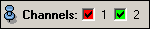

This port is commonly used by modules operating on multi-channel fields. The port provides a set of toggle buttons, one for each channel of the multi-channel field. Using these toggle buttons individual channels of the multi-channel field can be quickly switch on or off.

This port is used for example by the ProjectionView module.
Inherits all commands of Port.
Checks whether channel <index> is switched on or off.
Switches channel <index> on or off.
Returns the number of channels controlled by this port.